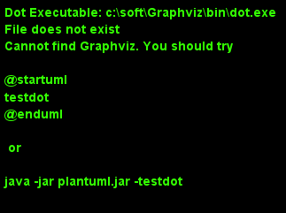

软件
Table of Contents
1 编程语言
1.1 C语言
1.1.1 宏操作
从注释来看是把x转换成字符串。
/* * Macros to transform values * into environment strings. */ #define XMK_STR(x) #x #define MK_STR(x) XMK_STR(x)
找到了相关的资料，解读了这个define，还顺便认识了另外两个不常用的 define
#define Conn(x,y) x##y #define ToChar(x) #@x #define ToString(x) #x
x##y表示什么？表示x连接y，举例说：
int n = Conn(123,456); //结果就是n=123456; char* str = Conn("asdf", "adf")//结果就是 str = "asdfadf";
再来看#@x，其实就是给x加上单引号，结果返回是一个const char。举例说： char a = ToChar(1);结果就是a='1';做个越界试验char a=ToChar(123);结 果是a='3'; 但是如果你的参数超过四个字符，编译器就给给你报错了！ error C2015: too many characters in constant; 最后看看#x,估计你也明 白了，他是给x加双引号
char* str = ToString(123132);//就成了str="123132";
宏调试接口
#pragma diag_suppress 174 //抑制警告 #ifdef DEBUG #define printfdbg printf #else #define printfdbg / \ /printfdbg #endif
可变参宏函数
//可变参宏函数定义 #define HAL_FUN(FUN_NAME, ...) \ FUN_NAME(__VA_ARGS__); //1参数函数定义 void funTest1(int a) { printf ("a:%d\n", a); } //2参数函数定义 void funTest1(int a, int b) { printf ("sum:%d\n", a+b); } //调用实例 int main(int argc, char* argv[]) { HAL_FUN(funTest1, 2); HAL_FUN(funTest1, 1, 3); return 0; }
1.1.2 位操作
将最右侧0改为1：
x|(x+1)
计算绝对值
int abs( int x ) { int y ; y = x >> 31 ; return (x^y)-y ;//or: (x+y)^y }
符号函数
int sign(int x) { return (x>>31) | (unsigned(-x))>>31 ;//x=-2^31时失败(^为幂) }
- sign(x) = -1, 则x<0;
- sign(x) = 0, 则x==0 ;
- sign(x) = 1, 则x>0
三值比较
int cmp( int x, int y ) { return (x>y)-(x-y) ; }
- cmp(x,y) = -1, 则x<y;
- cmp(x,y) = 0, 则x==y;
- cmp(x,y) = 1, 则x > y；
不使用第三方交换x,y
x ^= y ; y ^= x ; x ^= y ; x = x+y ; y = x-y ; x = x-y ; x = x-y ; y = y+x ; x = y-x ; x = y-x ; x = y-x ; x = x+y ;
统计1位的数量
int pop(unsigned x) { x = x-((x>>1)&0x55555555) ; x = (x&0x33333333) + ((x>>2) & 0x33333333 ) ; x = (x+(x>>4)) & 0x0f0f0f0f ; x = x + (x>>8) ; x = x + (x>>16) ; return x & 0x0000003f ; }
位反转
unsigned rev(unsigned x) { x = (x & 0x55555555) << 1 | (x>>1) & 0x55555555 ; x = (x & 0x33333333) << 2 | (x>>2) & 0x33333333 ; x = (x & 0x0f0f0f0f) << 4 | (x>>4) & 0x0f0f0f0f ; x = (x<<24) | ((x&0xff00)<<8) | ((x>>8) & 0xff00) | (x>>24) ; return x ; }
二进制码到GRAY码的转换
unsigned B2G(unsigned B ) { return B ^ (B>>1) ; }
GRAY码到二进制码
unsigned G2B(unsigned G) { unsigned B ; B = G ^ (G>>1) ; B = G ^ (G>>2) ; B = G ^ (G>>4) ; B = G ^ (G>>8) ; B = G ^ (G>>16) ; return B ; }
1.1.3 字符串操作
分割字符串：比如以任意几个字符串B作为A字符串的分割符号，A字符串可以 以B作为开头，结尾也可以有任意个B，中间也可以有任意个B。
1: /** 2: * @brief 以demial分割string_org字符串，可以多次调用，分割完string_org 3: * 比较经典的是里面的map对demial的编码算法 4: * @param string_org 待分割字符串 5: * @param demial 分隔符 6: * @return NULL：没找到除demial的字符串，其他：找到的第一个字符串 7: */ 8: char *strtok(char *string_org, const char * demial) 9: { 10: static unsigned char* last; 11: unsigned char*str; 12: const unsigned char*ctrl = (const unsigned char*)demial; 13: unsigned char map[32]; 14: int count; 15: memset(map, 0, sizeof(map)); 16: //把demial的高5bit编码到map的index下标中，把demial的低3bit编码到 17: //map该下标的值中，下标和值中的每个1标识一个不同的demial; 18: do 19: { 20: map[*ctrl >> 3] |= (1 << (*ctrl & 7)); 21: } while (*ctrl++); 22: str = (string_org)?(unsigned char * )string_org: 23: last; 24: // 对str中每个字符取出来做map编码再比较，直到'\0'结束符 25: // 略去string_org以demial开头的字符串 26: while ((map[*str >> 3] & (1 << (*str & 7))) && *str) 27: { 28: str++; 29: } 30: string_org = (char *)str; 31: for (; * str; str++) 32: { 33: if (map[*str >> 3] & (1 << (*str & 7))) 34: { 35: *str++ = '\0';//找到1个demial就截取退出 36: break; 37: } 38: } 39: last = str;//保留剩下的未截取的字符串 40: //空字符串, 如最后1个参数后面添加一堆的空格" test 1 2 " 41: return (string_org == (char *)str) ? NULL: 42: string_org;//截取了开头的demial到第2次demial之间的字符串 43: }
1.1.4 嵌入式
printf调试：可以如下步骤
#include "uart.h"//串口发送单个字符的API #include "stdio.h"//里面有FILE结构体声明 #pragma import(__use_no_semihosting_swi)//半主机模式 struct __FILE//stdio.h里面的FILE结构体声明需要 { int handle; }; FILE __stdout, __stderr;//选用，如果需要分别输出 int fputc(int ch, FILE* f)//printf最终调用的接口 { uart_put((unsigned char)ch); return ch; }
1.2 JAVA语言
1.3 PYTHON语言
1.3.1 base
字符串转换为变量。
var = "This is a string" varName = 'var' s= locals()[varName] s2=vars()[varName] print(s) print(s2) print(eval(varName))
添加个人库: 比如当前工作路径下有./lib/File/filecsv.py , 然后就可以直接使 用filecsv里面的函数了。
sys.path.append('./lib') from File.file_csv import *
- 重新载入模块：比如重新加载filecsv.py。
- 导入sys，imp库，import sys，imp
- 查看已经导入的库，sys.modules
- 找到filecsv库的字符
- 重新导入模块，imp.reload(sys.modules['filecsv'])
1.3.2 numpy
- array矩阵的max和min静态属性：比如array矩阵data=array([[1, 5, 3], [8, 6, 1], [9, 0, 4], [4, 6, 5]]), data.min(0) 和data.max(0)是从每 列中获取的min和max，组成一个向量，data.min(1) 和data.max(1)是从每行 中获得min和max；
- 指数e：numpy.exp()可以表示，但是是函数，math.exp()也是，scipy.exp() 也是，numpy.e和math.e和scipy.e则是一个float型量了。
- 复数：可以表示成1+3j，3和j之间不能相隔，3必须为实数不能是符号，j必 须在3之后，也可以使用numpy.complex(1, 3)构成1+3j, 同理也就可以构成 numpy.complex(1, numpy.pi)即\(e^{1+pi j}\)，复数的角度用 numpy.angle()计算
1.3.3 matplotlib
此包注意用于画图
1.3.3.1 画XY轴离散点图
- 先获得x,y的取值范围，比如x=numpy.arange(0, 10), y=numpy.arange(3, 10), 其个数要一致；
- 倒入画图包：import matplotlib.pyplot as plt；
- 开始画图：plt.plot(x, y, 'o-'), 第3个参数用于对点进行标注；
- 设置标题：plt.title('x, y test')
- 设置X轴说明：plt.xlabel('x label')
- 设置y轴说明：plt.ylabel('y label')
- 显示图：plt.show()
2 状态机和信号量
2.1 断言
1: #ifdef NF_NDEBUG 2: #define NF_ASSERT(_exp) ((void)0) 3: #else 4: #define NF_ASSERT(_exp) ((_exp) ? (void)0 : 5: NF_Assert_Failed((const char * )__FILE__, __LINE__)) 6: extern void NF_Assert_Failed(const char * file, NF_Int32U line); 7: #endif
2.2 信号量
2.2.1 信号值
1: typedef uint32_t SignalValue_T;
2.2.2 信号名
1: typedef const char* SignalName_T;
2.2.3 信号ID
1: typedef uint32_t SignalID_T;
2.2.4 信号对象
1: typedef struct _sig 2: { 3: SignalName_T Name; 4: SignalValue_T Value; 5: }Signal_T;
2.2.5 信号存储表
1: #define MAX_SIGNAL_NUM 50 2: static Signal_T Signal_SigList[MAX_SIGNAL_NUM] = {0}; 3: static uint32_t Signal_SigListCnt = 0;
2.2.6 信号内部操作
信号搜索
1: //按信号名在表中查找信号对象 2: Signal_T* Signal_Search(SignalName_T name, SignalID_T* id_ret) 3: { 4: uint32_t i; 5: 6: //信号名不能为空 7: NF_ASSERT( name != NULL_PTR ); 8: 9: for (i = 0; i < Signal_SigListCnt; i ++) 10: { 11: if ( strcmp(Signal_SigList[i].Name, name) == 0 ) 12: { 13: //通过回调参数返回ID号 14: if (id_ret != NULL_PTR) 15: { 16: *id_ret = i; 17: } 18: 19: return &(Signal_SigList[i]); 20: } 21: } 22: //没有找到，返回空指针 23: return NULL_PTR; 24: }
创建信号
1: Signal_T* Signal_Create(SignalName_T name, SignalValue_T val, SignalID_T* id_ret) 2: { 3: //信号名不能为空 4: NF_ASSERT( name != NULL_PTR ); 5: if (Signal_SigListCnt < MAX_SIGNAL_NUM) 6: { 7: Signal_SigList[Signal_SigListCnt].Name = name; 8: Signal_SigList[Signal_SigListCnt].Value = val; 9: Signal_SigListCnt ++; 10: //通过回调参数返回ID号 11: if (id_ret != NULL_PTR) 12: { 13: *id_ret = Signal_SigListCnt - 1; 14: } 15: return &(Signal_SigList[Signal_SigListCnt - 1]); 16: } 17: else 18: { 19: //信号列表满，创建失败 20: //此时应加大头文件中最大信号数量宏MAX_SIGNAL_NUM 21: return NULL_PTR; 22: } 23: }
2.2.7 信号操作API
通过信号名设置值
1: SignalID_T Signal_Set(SignalName_T name, SignalValue_T val) 2: { 3: Signal_T* sig = NULL_PTR; 4: SignalID_T id; 5: //信号名不能为空 6: ASSERT( name != NULL_PTR ); 7: sig = Signal_Search(name, &id); 8: if (sig != NULL_PTR) 9: { 10: sig->Value = val; 11: return id; 12: } 13: else 14: { 15: sig = Signal_Create(name, val, &id); 16: //断言失败则信号列表满，需增大NF_MAX_SIGNAL_NUM 17: ASSERT( sig != NULL_PTR ); 18: return id; 19: } 20: }
通过信号ID设置值
1: void Signal_SetID(SignalID_T id, SignalValue_T val) 2: { 3: //ID号需有效 4: ASSERT( id < Signal_SigListCnt ); 5: if (id < Signal_SigListCnt) 6: { 7: Signal_SigList[id].Value = val; 8: } 9: }
通过信号名获取值
1: SignalValue_T Signal_Get(SignalName_T name) 2: { 3: Signal_T* sig = NULL_PTR; 4: //信号名不能为空 5: ASSERT( name != NULL_PTR ); 6: sig = Signal_Search(name, NULL_PTR); 7: 8: if (sig != NULL_PTR) 9: { 10: //搜索成功返回信号值 11: return sig->Value; 12: } 13: else 14: { 15: //搜索失败返回0 16: return 0; 17: } 18: }
通过信号ID获取值
1: SignalValue_T Signal_GetID(SignalID_T id) 2: { 3: //ID号需有效 4: ASSERT( id < Signal_SigListCnt ); 5: 6: if (id < Signal_SigListCnt) 7: { 8: return Signal_SigList[id].Value; 9: } 10: }
2.3 状态机
2.3.1 状态机
1: typedef struct _sta_machine 2: { 3: State_T State; 4: FSM_Name_T Name; 5: }FSM_T; 6:
2.3.2 状态名称
1: typedef const char* FSM_Name_T;
2.3.3 状态处理函数
1: typedef void (*FSM_Handler_T)(FSM_T* me, SignalName_T name, SignalValue_T val);
2.3.4 状态定义
1: typedef struct _sta 2: { 3: FSM_Handler_T Dispatch; 4: FSM_Name_T Name; 5: }State_T;
2.3.5 状态转换函数
检查信号状态并派发给状态机
1: void FSM_CheckSignal(FSM_T* me, SignalName_T name) 2: { 3: ASSERT( me != NULL_PTR ); 4: me->State.Dispatch(me, name, Signal_Get(name)); 5: }
转换状态机状态
1: void FSM_Translate(FSM_T* me, State_T state) 2: { 3: ASSERT( me != NULL_PTR ); 4: me->State = state; 5: }
2.4 应用
2.4.1 状态机转换

Figure 1: 状态机应用
2.4.2 源码
1: //GetKeyState:windows api监测键盘按键 2: #define IS_KEY_PRESS(_key) ((GetKeyState(_key) >= 0) ? Bool_False : Bool_True ) 3: 4: //信号产生者 5: void Test_Key_Process(void) 6: { 7: if ( IS_KEY_PRESS('Q') ){ 8: Signal_Set("key_q_press", 1); 9: } 10: else{ 11: Signal_Set("key_q_press", 0); 12: } 13: 14: if ( IS_KEY_PRESS('E') ){ 15: Signal_Set("key_e_press", 1); 16: } 17: else{ 18: Signal_Set("key_e_press", 0); 19: } 20: } 21: 22: //状态机对象 23: FSM_T Test_FSM_QandE; 24: 25: //状态机的三个状态处理函数 26: //IDLE状态处理函数 27: void Test_FSM_QandE_IDLE(FSM_T* me, SignalName_T name, SignalValue_T val) 28: { 29: if ( FSM_NameIs(name, "key_q_press") ) 30: { 31: if ( val == 1 ) 32: { 33: FSM_TRAN(Test_FSM_QandE_QDOWN); 34: printf("Test_FSM_QandE State Translate : IDLE --> QDOWN\n"); 35: } 36: } 37: } 38: 39: //QDOWN状态处理函数 40: void Test_FSM_QandE_QDOWN(FSM_T* me, SignalName_T name, SignalValue_T val) 41: { 42: if ( FSM_NameIs(name, "key_e_press") ) 43: { 44: if ( val == 1 ) 45: { 46: FSM_TRAN(Test_FSM_QandE_QEDOWN); 47: printf("Test_FSM_QandE State Translate : QDOWN --> QEDOWN\n"); 48: } 49: } 50: else if( FSM_NameIs(name, "key_q_press") ) 51: { 52: if ( val == 0 ) 53: { 54: FSM_TRAN(Test_FSM_QandE_IDLE); 55: printf("Test_FSM_QandE State Translate : QDOWN --> IDLE\n"); 56: } 57: } 58: } 59: 60: //QEDOWN状态处理函数 61: void Test_FSM_QandE_QEDOWN(FSM_T* me, SignalName_T name, SignalValue_T val) 62: { 63: if ( FSM_NameIs(name, "key_e_press") ) 64: { 65: if ( val == 0 ) 66: { 67: FSM_TRAN(Test_FSM_QandE_QDOWN); 68: printf("Test_FSM_QandE State Translate : QEDOWN --> QDOWN\n"); 69: } 70: } 71: else if( FSM_NameIs(name, "key_q_press") ) 72: { 73: if ( val == 0 ) 74: { 75: FSM_TRAN(Test_FSM_QandE_IDLE); 76: printf("Test_FSM_QandE State Translate : QEDOWN --> IDLE\n"); 77: } 78: } 79: } 80: 81: int main(void) 82: { 83: //初始化状态机 84: FSM_Translate(&Test_FSM_QandE, FSM_State(Test_FSM_QandE_IDLE)); 85: 86: for (;;) 87: { 88: Test_Key_Process(); 89: FSM_CheckSignal(&Test_FSM_QandE, "key_q_press"); 90: FSM_CheckSignal(&Test_FSM_QandE, "key_e_press"); 91: } 92: }